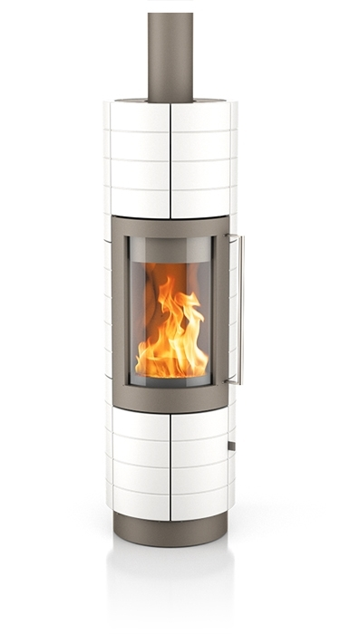

Welcome to Comunidade de Lisboa
Lisboa - Wikimedia Commons
2020.10.21 09:16
Lisboa
From Wikimedia Commons, the free media repository Jump to navigation Jump to search Brezhoneg : Lisboa eo kêr-benn Portugal . Gwelet ivez rummad Lisboa evit titouroù ouzhpenn. Čeština : Lisabon je hlavní město Portugalska . Dansk : Lissabon er Portugals hovedstad. Deutsch : Lissabon ist die Hauptstadt Portugals . English : Lisbon is the capital of Portugal . See also Category:Lisbon for more media. Español : Lisboa es la capital de Portugal . Véase también Lisboa para más material multimedia. Esperanto : Lisbono estas la ĉefurbo de Portugalio . Euskara : Lisboa Portugalgo hiriburua da. Ikus gainera Lisboa irudi gehiago ikusteko. Français : Lisbonne ( Lisboa ) est la capitale du Portugal . consultez également Category:Lisbon pour d'avantage de documents multimédias. Galego : Lisboa é a capital e meirande cidade de Portugal . Vexa tamén categoría:Lisboa para máis material. Hrvatski : Lisabon je glavni grad Portugala . Za više datoteka pogledajte kategoriju Lisabona . Italiano : Lisbona è la capitale del Portogallo . Nederlands : Lissabon is de hoofdstad van Portugal . Norsk bokmål : Lisboa er hovedstaden i Portugal . Plattdüütsch : Lissabon is de Hööftstadt vun Portugal . Polski : Lizbona jest stolicą Portugalii . Português : Lisboa é a capital de Portugal. Veja também a categoria:Lisboa para mais midia. Română : Lisabona e capitala Portugaliei . Vezi şi categorie:Lisabona pentru mai mult conţinut media. Slovenščina : Lizbona ( Lisboa ) je glavno mesto Portugalske . Za več Lizbona predstavnostnih vsebin glej tudi kategorijo Svenska : Lissabon är Portugals huvudstad. Se även kategori Lissabon Tagalog : Kabisera ng Portugal ang Lisboa . Türkçe : Lizbon Portekiz 'in başkentidir. Ayrıca kategori Lizbon 'a da bakınız. Ελληνικά : Η Λισαβόνα είναι η πρωτεύουσα και η μεγαλύτερη πόλη της Πορτογαλίας . Български : Лисабон е столицата на Португалия . Русский : Лиссабон — столица Португалии . Українська : Лісабон — столиця Португалії . 日本語 ： リスボン （Lisboa）は、 ポルトガル の首都で、ポルトガル最大の都市である。 עברית : ליסבון היא בירת פורטוגל . العربية : لشبونة هي عاصمة البرتغال .Contents
1 Coat of arms and flags of Lisbon / Brasões e bandeiras de Lisboa 2 Parishes / Freguesias 3 Buildings / Edifícios 3.1 Religious buildings / Edifícios religiosos 3.2 Cultural buildings / Edifícios culturais 3.3 Palaces / Palácios 3.4 Sports venues / Locais desportivos 3.5 Harbour 3.6 Other buildings / Outros edifícios 4 Transport / Transportes 4.1 Streets, avenues and squares / Ruas, avenidas e praças 4.2 Public transports / Transportes públicos 4.3 Airport / Aeroporto 5 Green spaces / Espaços verdes 5.1 Parks and gardens / Parques e jardins 5.2 Tagus / Tejo 6 People / Gente 7 MilitaryCoat of arms and flags of Lisbon / Brasões e bandeiras de Lisboa [ edit ]
English: See: Category:Crests of Lisboa Português: Veja: Category:Crests of Lisboa
Parishes / Freguesias [ edit ]
Ajuda Alcântara Alto do Pina Alvalade Ameixoeira Anjos Beato Benfica Campo Grande Campolide Carnide Castelo Charneca Coração de Jesus Encarnação Graça Lapa Lumiar Madalena Mártires Marvila Mercês Nossa Senhora de Fátima Pena Penha de França Prazeres Sacramento Santa Catarina Santa Engrácia Santa Isabel Santa Justa Santa Maria de Belém Santa Maria dos Olivais Santiago Santo Condestável Santo Estêvão Santos-o-Velho São Cristóvão e São Lourenço São Domingos de Benfica São Francisco Xavier São João São João de Brito São João de Deus São Jorge de Arroios São José São Mamede São Miguel São Nicolau São Paulo São Sebastião da Pedreira São Vicente de Fora Sé Socorro
Buildings / Edifícios [ edit ]
Religious buildings / Edifícios religiosos [ edit ]
English: See: Category:Religious buildings in Lisbon Português: Veja: Category:Religious buildings in Lisbon
Cultural buildings / Edifícios culturais [ edit ]
English: See: Category:Cultural buildings in Lisbon Português: Veja: Category:Cultural buildings in Lisbon
Palaces / Palácios [ edit ]
English: See: Category:Palaces in Lisbon Português: Veja: Category:Palaces in Lisbon
Sports venues / Locais desportivos [ edit ]
English: See: Category:Sports venues in Lisbon Português: See: Category:Sports venues in Lisbon
Harbour [ edit ]
Other buildings / Outros edifícios [ edit ]
English: See: Category:Buildings in Lisbon Português: Veja: Category:Buildings in Lisbon
Transport / Transportes [ edit ]
Streets, avenues and squares / Ruas, avenidas e praças [ edit ]
English: See: Category:Streets in Lisbon e Category:Squares in Lisbon Português: Veja: Category:Streets in Lisbon e Category:Squares in Lisbon
Public transports / Transportes públicos [ edit ]
English: See:Category:Lisbon Metro ,
Category:Trams in Lisbon ,
Category:Funiculars in Lisbon ,
Category:Buses in Lisbon ,
Category:Ferries in Lisbon ,
Category:Train stations in Lisbon Português: Veja:
Category:Lisbon Metro ,
Category:Trams in Lisbon ,
Category:Funiculars in Lisbon ,
Category:Buses in Lisbon ,
Category:Ferries in Lisbon ,
Category:Train stations in Lisbon
Airport / Aeroporto [ edit ]
English: See: Category:Airport of Lisbon Português: Veja: Category:Airport of Lisbon
Green spaces / Espaços verdes [ edit ]
Parks and gardens / Parques e jardins [ edit ]
English: See: Category:Gardens in Lisbon Português: Veja: Category:Gardens in Lisbon
Tagus / Tejo [ edit ]
English: See: Category:Tagus River Português: Veja: Category:Tagus River
People / Gente [ edit ]
English: See: Category:People of Lisbon Português: Veja: Category:People of Lisbon
Military [ edit ]
Montijo Air Base Retrieved from " https://commons.wikimedia.org/w/index.php?title=Lisboa&oldid=464676205 " Categories : Lisbon Gallery pages of populated places in PortugalNavigation menu
Personal tools
English Not logged in Talk Contributions Create account Log inNamespaces
Gallery DiscussionVariants
Views
View Edit HistoryMore
Search
Navigate
Main page Welcome Community portal Village pump Help centerParticipate
Upload file Recent changes Latest files Random file Contact usTools
What links here Related changes Special pages Permanent link Page information Cite this pagePrint/export
Create a book Download as PDF Printable versionIn Wikipedia
Add links This page was last edited on 19 September 2020, at 09:15. Files are available under licenses specified on their description page. All structured data from the file and property namespaces is available under the Creative Commons CC0 License ; all unstructured text is available under the Creative Commons Attribution-ShareAlike License ; additional terms may apply. By using this site, you agree to the Terms of Use and the Privacy Policy . Privacy policy About Wikimedia Commons Disclaimers Mobile view Developers Statistics Cookie statement